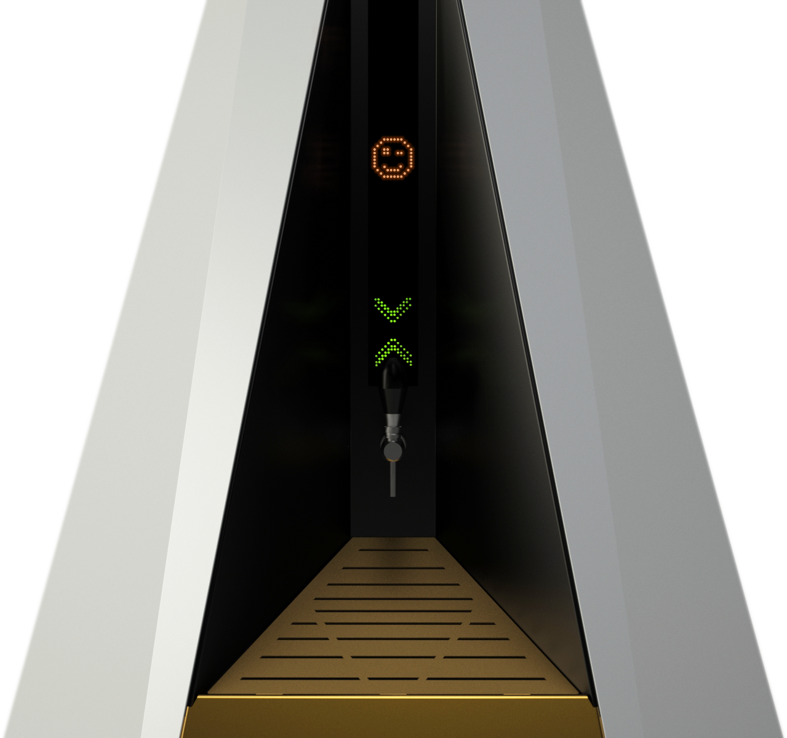
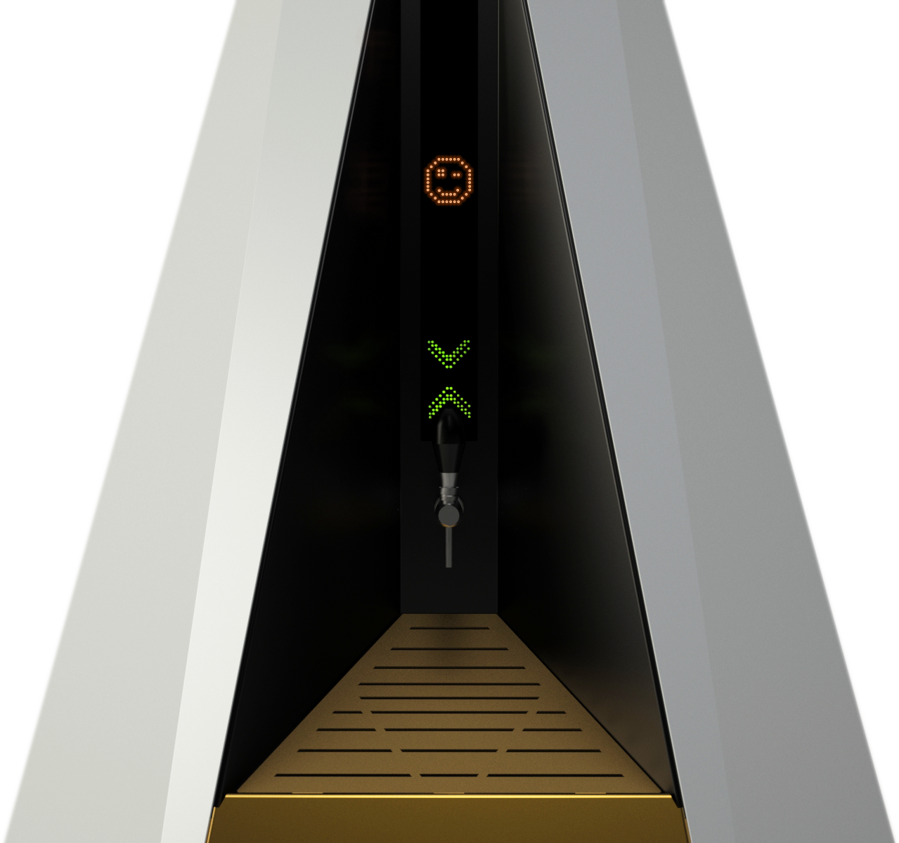

Here you are!
In case you’re curious, you should know that in our process lies our magic. This is elarco.
Click the pieces of the arch in the right order.
Order
noun ˈôrdər/
"Our rationale behind every methodology. Everything has an order, and in order we find everything."
Align all arches.
Depth
noun depTH/
"A drive to go beyond boundaries, to expose in detail every layer of the process. Simple on the eye, complex as a whole."
Get the arch into the right position.
Intuition
noun ˌint(y)o͞oˈiSH(ə)n/
"Intuition is our compass to forsee, to step forward. An internal insight as a guide."
elarco is a Product Design company, based in Barcelona, working for clients globally, using industrial, engineering and strategy services to bring ideas to life, and to the market.
 

We do things right
We do them right
We research, test, iterate, prototype, engineer and create the most viable, useful and optimal solution to a problem.
See our workWe understand design as a 360º discipline, a process by which to find the right answer, we have to make the right questions, putting the user first.
Research & Strategy
Find your target market. Know your consumer. Work for them.
Design
Create the right product, the most optimal solution for a problem.
Engineering
Build with the ideal technology, and the right structural fit.